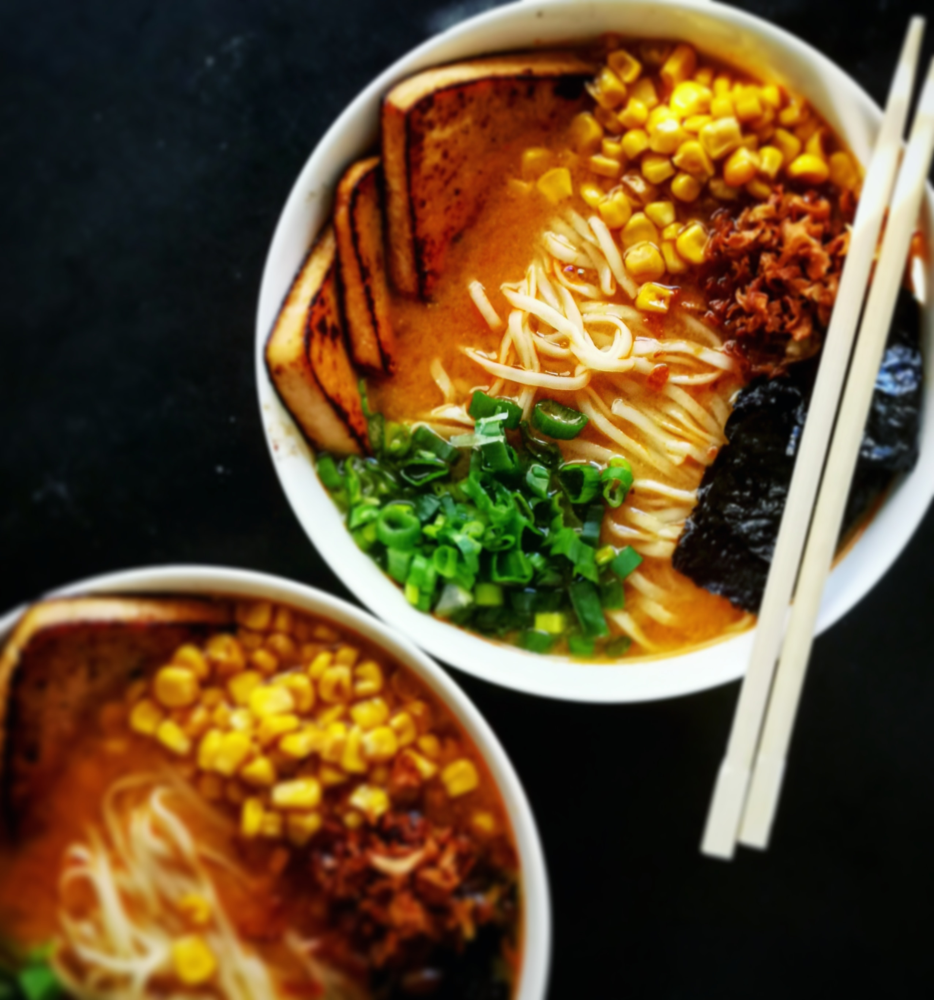

Matcha Domes

This amazing Japanese inspired dessert is sure to impress your pallette. The earthly flavors of the matcha combined with the chocolate from the mousse is a great textural experience.
Ingredients:
- Garlic
- Ginger
- Leeks
- Carrots
- Dried kelp
- Dried shiitake mushrooms
- Water
- Msg
- Salt
- Tofu
- Special sauce
- Sweet corn
- Raamen noodles
- Green onion
- Toasted nori
- Fried onion
Steps:
- Make the stock by adding all the ingredients on a pot and let it simmer for 2 hours.
- Make the tare by adding all the ingredients listed to a bowl.
- Fry the tofu until brown on both sides, and then add the special sauce to both sides and cook until crispy.
- Cook noodles according to package instructions.
- Assemble the ramen bowl. Add a tbsp of tare at the bottom of a bowl, then add in the broth. Add in ramen ingredients and desired toppings.